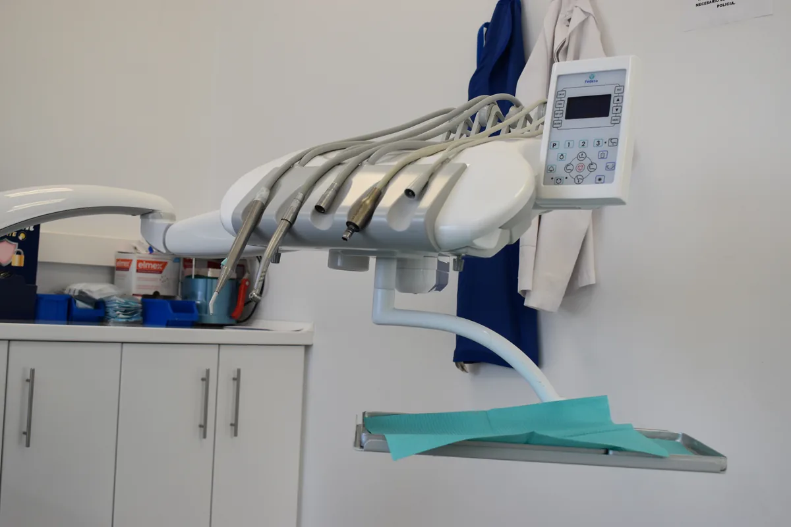
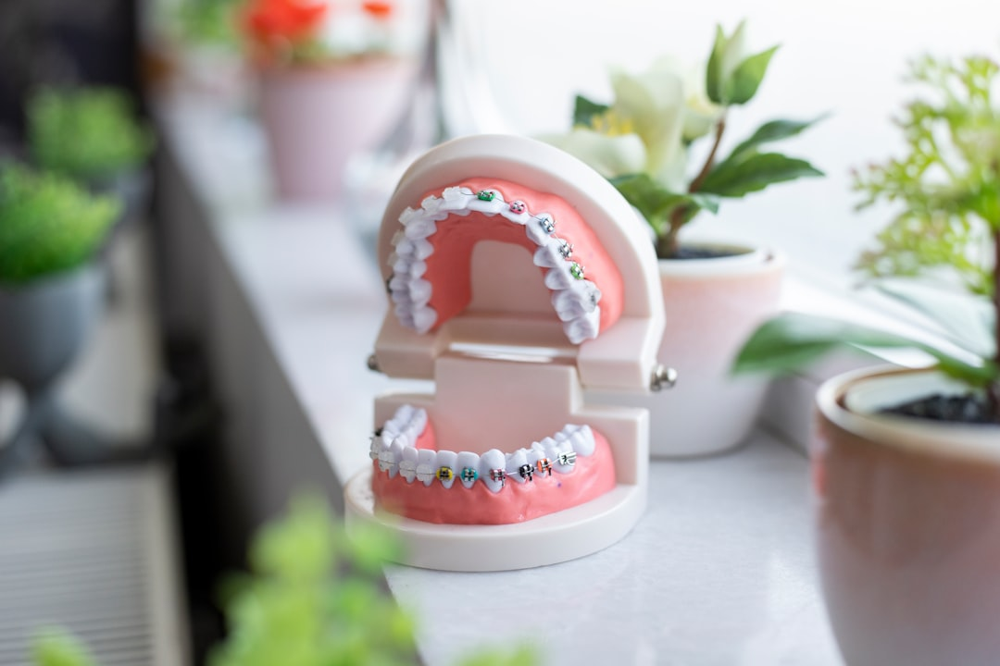

Implantología
Implantes dentales: cuándo se recomiendan y qué debes saber
Una guía sencilla sobre cuándo puede estar indicado un implante dental, qué se valora antes del tratamiento y cómo planificarlo con seguridad.
Leer artículo destacadoContenido pensado para pacientes que quieren entender sus síntomas, comparar opciones y saber cuándo pedir cita en una clínica dental de confianza.
Una guía sencilla sobre cuándo puede estar indicado un implante dental, qué se valora antes del tratamiento y cómo planificarlo con seguridad.
Leer artículo destacadoMás contenido útil para resolver búsquedas frecuentes sobre dentista en Parla, higiene, estética dental, ortodoncia e implantes.

Muchas patologías bucales avanzan sin molestias al principio. Una revisión periódica ayuda a detectar problemas antes de que sean urgentes.
Leer guía
El sangrado de encías no es algo normal que haya que asumir. Puede indicar inflamación, acumulación de placa o enfermedad periodontal.
Leer guía
La ortodoncia no es solo cosa de niños. En adultos puede mejorar estética, mordida, higiene y estabilidad de otros tratamientos dentales.
Leer guía
La limpieza profesional ayuda a controlar placa, sarro, manchas superficiales e inflamación de encías cuando el cepillado diario no es suficiente.
Leer guía
Antes de aclarar el tono dental conviene revisar caries, encías y sensibilidad. Te contamos qué valorar para hacerlo con seguridad.
Leer guía
El dolor dental puede tener varias causas: caries profunda, inflamación, fisura, infección o problemas de encía. Te explicamos cuándo consultar.
Leer guía
Apretar o rechinar los dientes puede provocar desgaste, dolor mandibular, cefaleas o sensibilidad. Descubre cómo detectarlo.
Leer guía
Las caries pueden avanzar de forma silenciosa. Una detección temprana permite tratamientos más conservadores y menos complejos.
Leer guía
Alineadores transparentes y brackets pueden corregir la posición dental, pero no funcionan igual ni sirven para todos los casos.
Leer guíaHemos estructurado el blog con preguntas claras, respuestas directas, enlazado interno, categorías, datos estructurados y contenido local para que Google, ChatGPT, Gemini y otros sistemas puedan entender mejor qué ofrece Clínica Dali Dent Parla.
No. El blog es informativo y ayuda a entender señales habituales, pero el diagnóstico necesita valoración profesional.
Sí. Cada artículo incluye llamadas a la acción para pedir orientación por teléfono o WhatsApp.
Porque ayudan a resolver búsquedas concretas y refuerzan el enlazado interno hacia las páginas principales de tratamientos.
Cuéntanos qué necesitas y te orientaremos con una atención cercana y profesional.